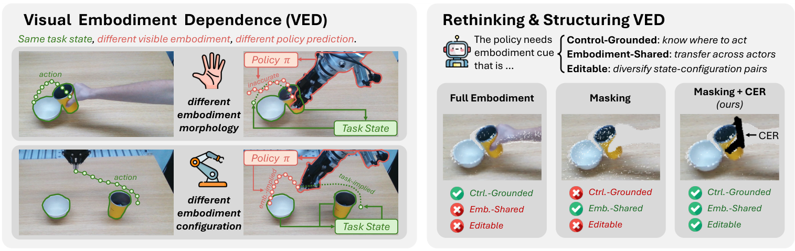
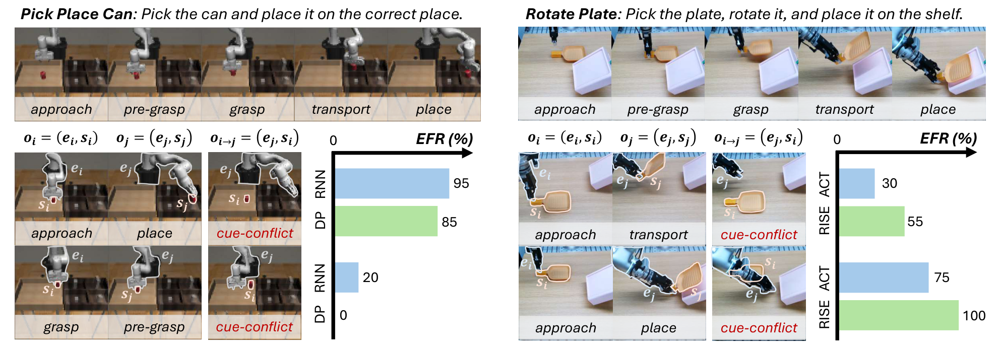
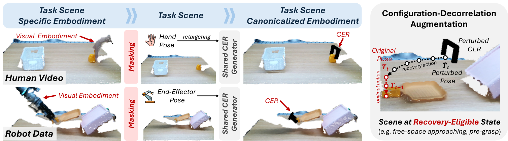
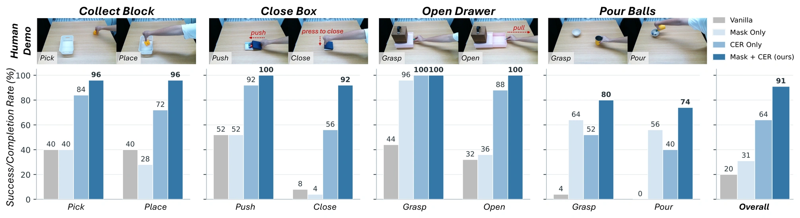
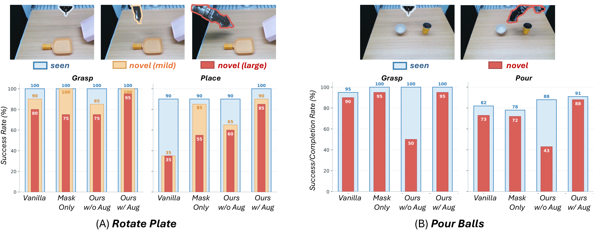
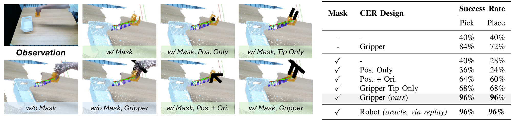
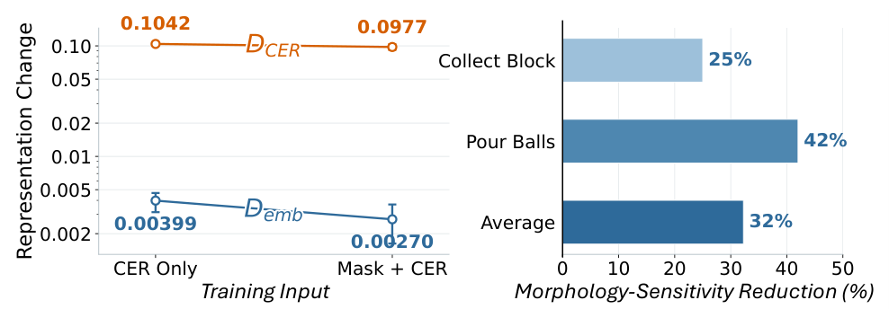

Real world · Pick and placeCollect Block
1 / 3
Pick up the block and place it in the container.
1Shanghai Jiao Tong University 2FORTE Lab 3Noematrix 4Flexiv 5Shanghai Innovation Institute

Visuomotor policies observe both the task scene and the acting embodiment, allowing embodiment-specific visual cues to influence action prediction. We study this phenomenon as visual embodiment dependence (VED) and show, through cue-conflict interventions across representative policies, that visible robot configuration can become a shortcut to task progress. Rather than eliminating VED, we argue that it should be structured around embodiment information that supports control and generalization. We realize this through embodiment canonicalization in 3D point clouds, replacing the original embodiment with a canonical end-effector representation (CER) that preserves control-relevant geometry while abstracting embodiment-specific morphology. Its editable form further enables configuration-decorrelation augmentation for unfamiliar robot configurations. Experiments show that embodiment canonicalization substantially improves human-to-robot policy transfer without robot demonstrations, while simply removing the embodiment is insufficient without preserving control-relevant geometry. We further find that CER itself can become a configuration shortcut when robot configuration becomes decoupled from task progress; configuration-decorrelation augmentation mitigates this failure mode and restores robust recovery without sacrificing performance on seen configurations. Together, these results show that robust visuomotor learning benefits from structuring, rather than removing, visual embodiment information.
A policy observes both the task scene and the acting hand or robot. This can introduce two forms of dependence: morphology dependence, which limits transfer between visually different embodiments, and configuration dependence, in which the visible robot configuration becomes a proxy for task progress.
To isolate configuration dependence, we construct cue-conflict observations: the task state comes from one stage, while the visible embodiment configuration comes from another. We evaluate BC-RNN and Diffusion Policy in simulated Pick Place Can, and ACT and RISE in real-world Rotate Plate. All diagnostic policies predict absolute actions and receive no proprioceptive robot state, so configuration is available only through vision.

Visible robot configuration can become a state-dependent shortcut to task progress. On Rotate Plate, RISE reaches 100% EFR when an approach-stage task state is paired with a place-stage robot configuration. Reliance on configuration varies across task stages, but can dominate task-state evidence even without proprioceptive input.
Preserve the task scene. Canonicalize the embodiment. Diversify its configuration.

Both operations are defined in 3D, and we use RISE as the policy backbone. Configuration-decorrelation augmentation is applied on the fly with probability 0.5 at eligible states, retaining only perturbations and recovery trajectories that satisfy workspace and collision constraints.
We collect 50 human demonstrations per task for four real-world tasks: Collect Block, Close Box, Open Drawer, and Pour Balls. Policies are trained from scratch using only these human demonstrations, with no robot demonstrations. Controlled variants share the same RISE backbone and action-processing pipeline.

Embodiment canonicalization improves human-to-robot transfer by suppressing morphology-specific cues while preserving control-relevant geometry. Overall task performance increases from 20% to 91%, compared with 31% for masking alone and 64% for CER alone. Preserving end-effector geometry is particularly important for precise or sustained control.
Pick up the block and place it in the container.
Push the lid into position and press it closed.
Grasp the drawer handle and pull the drawer open.
Grasp the cup, pour its balls into the bowl, and place it down.
We separately collect 50 teleoperated robot demonstrations per task for Rotate Plate and Pour Balls. At evaluation, robot configurations are paired with the initial task state to break the configuration–progress associations seen during training. Rotate Plate includes mild and large shifts; Pour Balls uses a novel configuration-state shift. Policies share the same 20 object initializations and robot configurations for each task.

Configuration-decorrelation augmentation improves robustness to unfamiliar robot configurations. Embodiment canonicalization alone can remain brittle because CER can still correlate with task progress. Augmentation raises large-shift Rotate Plate placement success from 60% to 85% and novel-configuration Pour Balls pouring completion from 43% to 88%, compared with the same method without augmentation, while preserving seen-configuration performance.
Seen configuration (left) versus novel configuration (right), shown at 2× speed for each method.
Grasp the cup, pour its balls into the bowl, and place it down.
Seen configuration (left) versus novel configuration (right), shown at 2× speed for each method.
On Collect Block, we compare masking and CER designs ranging from coarse position and pose cues to gripper tips and the full canonical gripper. An oracle representation, obtained by replaying trajectories on the robot and capturing its full geometry, tests whether the compact CER loses control-relevant information.

Suppressing original morphology and preserving expressive end-effector geometry are both important for cross-embodiment transfer. On Collect Block, the full canonical gripper achieves 96% success in both picking and placement, matching the oracle representation with full robot morphology. Coarse position or pose cues are less effective, showing that compact but sufficiently expressive geometry preserves the information needed for control.
We compare masking during training and deployment on Collect Block, reporting both task success and inference latency. Deployment variants use SAM2 segmentation, a mask rendered from the robot model and camera calibration, or no mask; all retain CER.
| Training | Deployment | Deployment Mask source | Success | Latency |
|---|---|---|---|---|
| Mask + CER | Mask + CER | SAM2 | 96% | 237 ms |
| Mask + CER | Mask + CER | Robot model (URDF) rendering | 96% | 190 ms |
| Mask + CER | CER only | — | 92% | 182 ms |
| CER only | CER only | — | 72% | 182 ms |
| Vanilla | — | — | 40% | 181 ms |
Deployment-time masking is not strictly required to retain most of the transfer benefit. On Collect Block, a policy trained with masking retains 92% success without deployment masking (182 ms), compared with 72% when masking is omitted throughout and 181 ms of vanilla policy inference. When a deployment mask is used, robot-model rendering maintains 96% success while reducing inference latency from 237 ms with SAM2 to 190 ms.
Controlled interventions on held-out robot observations from Collect Block and Pour Balls independently remove the original embodiment or CER while keeping the task scene fixed. We measure changes in the final representation before the action decoder using cosine distance to examine which embodiment cues the policy depends on.

Training-time masking reduces dependence on the original morphology while preserving dependence on CER. Sensitivity to the original morphology decreases by 25% on Collect Block and 42% on Pour Balls, while sensitivity to the control-relevant geometry provided by CER remains substantial.
@article{fang2026ved,
title = {Rethinking Visual Embodiment Dependence in Visuomotor Policies},
author = {Fang, Hongjie and Lu, Yuxuan and Wang, Chenxi and
Qin, Haoxiang and Tang, Shirun and He, Zihao and
Xia, Shangning and Chen, Jingjing and Liu, Wanxi and
Wang, Shiquan and Lu, Cewu},
journal = {arXiv preprint arXiv:2609.16815},
year = {2026}
}